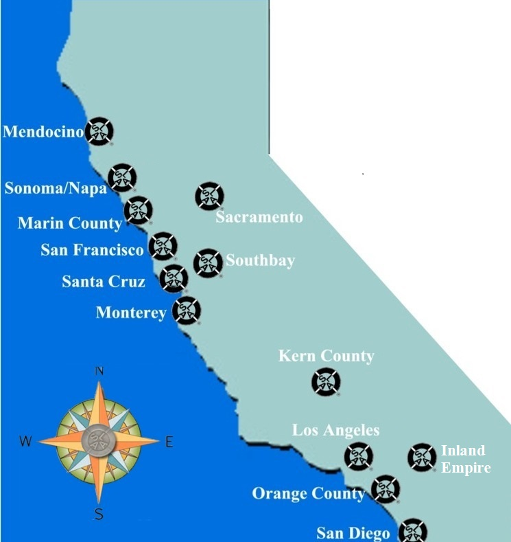

Links
Click on a location below for SLAA information for that area.

For a Directory to all California
SLAA Intergroups and Lone Groups
Las Vegas Intergroup
Web-site: www.slaalasvegas.com
Fellowship Wide Services
(National Office)

Related Twelve Step Programs
The sites listed below are only to provide individuals with the opportunity to learn about other Twelve Step recovery groups dealing with addiction to Sex, Love and Relationships. Sex and Love Addicts Anonymous neither endorses nor recommends these organizations.
Sex Addicts Anonymous Southern California Intergroup
Co-Dependents of Sex Addicts (COSA)
S-Anon International Family Groups